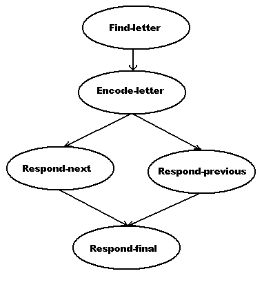
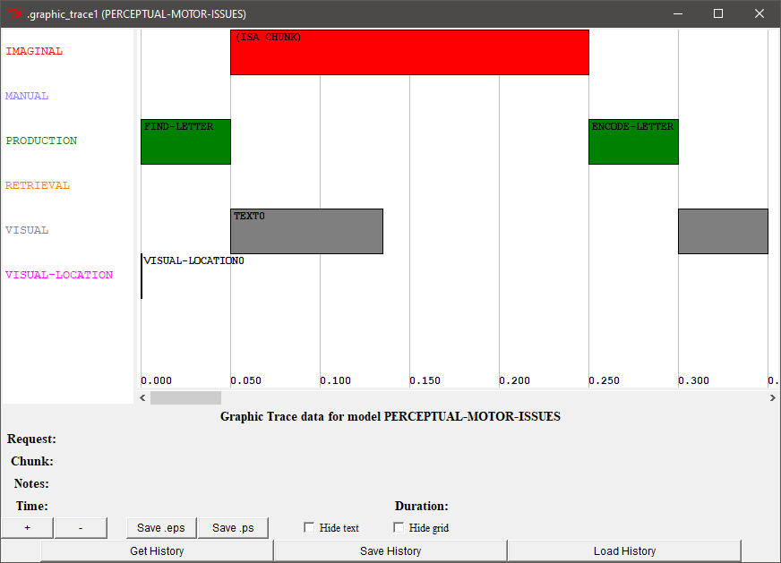
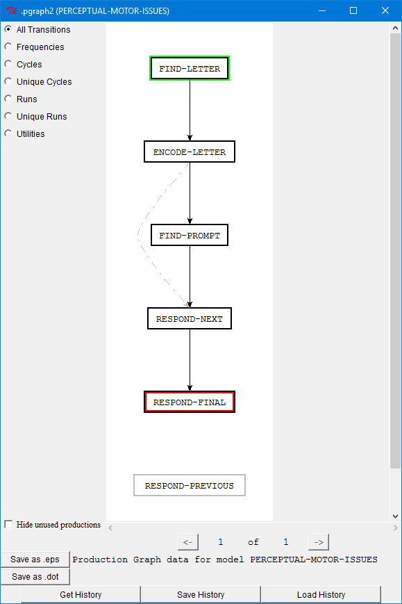
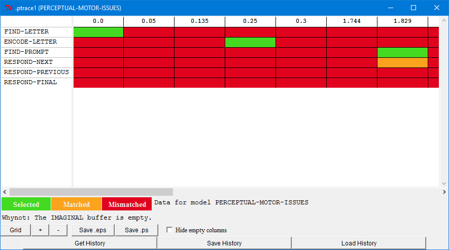
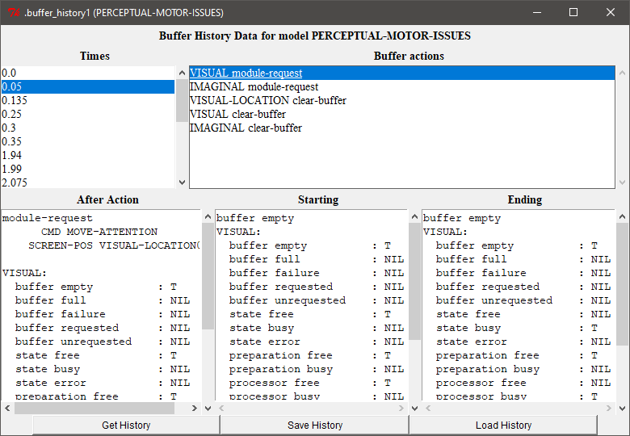

Debugging a Model Which Has Perceptual and Motor Components
In this text we are going to fix a model which is not working correctly to perform a simple experiment which requires visual and motor actions. We will also discuss some of the additional things that one should be careful about with respect to visual tasks in particular and introduce some additional tools in the ACT-R Environment which may be helpful in debugging and analyzing models.
The Task
The experiment which this model will have to perform involves the following steps:
- A letter is presented on the screen for between 1.5 and 2.5 seconds
- After the letter goes away either the word “next” or the word “previous” is displayed
- When the prompt is displayed the participant must type the letter which was presented followed by the appropriate letter from the alphabet based on the prompt
The perceptual-motor-issues-model.lisp file in this unit contains the model which is supposed to perform this task, and the task is implemented in the pm-issues.lisp and pm_issues.py files in the corresponding directories. To run the task you need to call the pm-issues-task function in Lisp or the task function in the pm_issues module in Python. Those functions have one optional parameter which if provided should be either the string “next” or “previous” to pick which prompt to display, or if neither is given a random prompt will be chosen for the trial. The return value from the function will be a list of the prompt displayed and an indication of whether the task was completed successfully or not. We will not discuss the experiment code here because it does not use any new ACT-R commands. It should be loaded/imported just like all of the other experiments seen in the tutorial and it will automatically load the corresponding model.
The Model Design
For most models, including this one, there are two important pieces to the model’s design. The first is how to represent the knowledge necessary for the model to be able to perform the task, and the other is the steps the model will perform to actually do the task. How the knowledge is represented for the model will affect how the model has to perform the task, and knowing what the model needs to do will affect what needs to be encoded in the knowledge representation. In general, these two design issues are intertwined and one will typically need to work on both of them together when starting the planning for the model. Below we will describe those two pieces of the model we have written for this task along with some explanation as to why we have made some of the choices we did. As we run the model and encounter problems we may find that our initial design choices are not sufficient to perform the task and thus we will have to adjust our design.
Knowledge representation
Because this model is performing a very simple task, we are not concerned with fitting human performance data, and we are only using the symbolic level of ACT-R’s declarative memory (we have not yet seen the subsymbolic level in the tutorial) we can choose a representation which should make the modeling task easier. If we were concerned about fitting human performance, we would have to consider the consequences of the representation more thoroughly and may need something more involved than what we will use here.
This model needs to know about letters of the alphabet and their ordering. We will represent that in chunks in the model’s declarative memory. The first choice to make is how we will distinguish letters, and we will use the simple assumption that each letter will be represented as a separate chunk. Now we have to decide on what slots the letters need and what information will be contained in those slots. Since this model will be reading a letter from the screen and typing keys it will be important to have the letter’s visual representation included in the chunk as well as a representation which can be used to type the letter. Both the visual and motor representations use a string to represent a letter. Thus that single representation is all we need to have in the chunk and we will store it in a slot called name. The other thing which the model needs to be able to determine is the next and previous letter of the alphabet given a particular letter. There are many ways that one could represent that, but because we are writing a simple symbolic model we will explicitly encode that information in the chunks for a given letter in slots called next and previous. In fact, to make things even easier for the model we will encode the next and previous information using the same perceptual/motor representation as we do for the name of the letter (a string). We will create a chunk-type called letter which defines those slots and use those slots to create chunks for the letters. Here is the chunk-type definition from the model along with the representation for the letter B:
(chunk-type letter name next previous)
(b isa letter name "b" next "c" previous "a")A more plausible model would likely represent the next and previous values with a reference to the other chunks instead of directly encoding the perceptual representations. Also, it might only encode the next value instead of both next and previous if we believe that most people only encode the alphabet in the forward direction. After we work through this example, as an exercise, you may want to try changing the model’s representation to something like that and see if you can then adjust the model so that it can still do the task.
We also need a way to represent the information needed to perform the task. Because this is a very simple task, we are not going to use a goal chunk to hold explicit state information and will instead rely on the perceptual input, buffer contents, and module states to determine the state of the model. We will however create a chunk to maintain the letter which we have read from the screen in the imaginal buffer. Since that letter is the only information we need in that chunk, we will define a chunk-type with one slot for a letter:
(chunk-type task letter)Actions to perform
Now we will describe how we want our model to perform the task. As noted above we are not going to use an explicit goal state to control the model. Instead we will rely on the visual-location buffer stuffing mechanism to have the model know when the screen changes and use the contents of the buffers and states of the modules to determine what to do next. Here is the high-level description of the steps which the model will perform:
- When it detects a letter on the screen attend it and record it in the imaginal buffer
- When it detects next or previous on the screen press the key for the attended letter and retrieve the corresponding letter chunk from declarative memory
- Once a chunk is retrieved press the appropriate key based on the prompt
There are other ways one could choose to perform this task, and as with the representation issues noted above, after working through the debugging of this model you may want to consider other ways of performing the task and try to model them.
To implement that sequence of actions we have written five productions. This is what each production is intended to do:
find-letter – responds to the appearance of the letter due to buffer stuffing of the visual-location buffer and then requests a visual attention shift to the letter and create a new chunk in the imaginal buffer
encode-letter – when the chunks resulting from the actions of find-letter are available in the imaginal and visual buffers update the imaginal buffer with the letter that is seen
respond-next – when the model sees the word “next” on the screen press the current letter’s key and make a retrieval request for the letter which occurs after the current one
respond-previous – when the model sees the word “previous” on the screen press the current letter’s key and make a retrieval request for the letter which occurs before the current one
respond-final – when a letter chunk has been retrieved press the corresponding key
This is how we expect them to fire to do the task where the choice of whether it is respond-next or respond-previous depends on the prompt displayed:

If you look over the productions you may already see some potential problems in them or with the overall design of the model, but please don’t get ahead of the exercise and just leave them alone until we encounter the problems during the testing below otherwise you may miss some of the steps along the way.
Load and Run the initial model
There are no warnings when this model is loaded. Since there are no syntax errors or other problems which we must fix before trying to run it we will run the model to see how it performs. To keep the testing consistent we will run it through trials for the “next” item until we have that working and then move on to testing the “previous” trials. Also, for consistency, we have set a seed parameter in the model. That way it will always be seeing the same letter and perform the same way. Once we are satisfied with its performance with the seed fixed we will remove that and test it under varying conditions.
Here is the trace we get when we run the model with either of these functions as appropriate (for the remainder of the tests we will only show the Lisp call for simplicity, but one can still use the Python version to get the same result):
? (pm-issues-task "next")
>>> pm_issues.task('next')
0.000 VISION SET-BUFFER-CHUNK VISUAL-LOCATION VISUAL-LOCATION0 NIL
0.000 VISION visicon-update
0.000 PROCEDURAL CONFLICT-RESOLUTION
0.050 PROCEDURAL PRODUCTION-FIRED FIND-LETTER
0.050 PROCEDURAL CLEAR-BUFFER VISUAL-LOCATION
0.050 PROCEDURAL CLEAR-BUFFER VISUAL
0.050 PROCEDURAL CLEAR-BUFFER IMAGINAL
0.050 PROCEDURAL CONFLICT-RESOLUTION
0.135 VISION Encoding-complete VISUAL-LOCATION0-0 NIL
0.135 VISION SET-BUFFER-CHUNK VISUAL TEXT0
0.135 PROCEDURAL CONFLICT-RESOLUTION
0.250 IMAGINAL SET-BUFFER-CHUNK IMAGINAL (ISA CHUNK)
0.250 PROCEDURAL CONFLICT-RESOLUTION
0.300 PROCEDURAL PRODUCTION-FIRED ENCODE-LETTER
0.300 PROCEDURAL CLEAR-BUFFER VISUAL
0.300 PROCEDURAL CONFLICT-RESOLUTION
2.285 NONE pm-issue-display (vision exp-window Simple task) next
2.285 VISION SET-BUFFER-CHUNK VISUAL-LOCATION VISUAL-LOCATION1 NIL
2.285 VISION visicon-update
2.285 PROCEDURAL CONFLICT-RESOLUTION
2.370 VISION Encoding-complete VISUAL-LOCATION0-0 NIL
2.370 VISION SET-BUFFER-CHUNK VISUAL TEXT1 NIL
2.370 PROCEDURAL CONFLICT-RESOLUTION
2.420 PROCEDURAL PRODUCTION-FIRED FIND-LETTER
2.420 PROCEDURAL CLEAR-BUFFER VISUAL-LOCATION
2.420 PROCEDURAL CLEAR-BUFFER VISUAL
2.420 PROCEDURAL CLEAR-BUFFER IMAGINAL
2.420 PROCEDURAL CONFLICT-RESOLUTION
2.505 VISION Encoding-complete VISUAL-LOCATION1-0 NIL
2.505 VISION SET-BUFFER-CHUNK VISUAL TEXT2
2.505 PROCEDURAL CONFLICT-RESOLUTION
2.620 IMAGINAL SET-BUFFER-CHUNK IMAGINAL (ISA CHUNK)
2.620 PROCEDURAL CONFLICT-RESOLUTION
2.670 PROCEDURAL PRODUCTION-FIRED ENCODE-LETTER
2.670 PROCEDURAL CLEAR-BUFFER VISUAL
2.670 PROCEDURAL CONFLICT-RESOLUTION
2.670 ------ Stopped because no events left to processThe return values from either of those indicates that it did not respond correctly because the second value is not true, with the Lisp version returning ("next" NIL) and the Python version returning ['next', False]. Looking at the trace we see that the productions did not fire in the sequence we expected. There are a couple of things we could investigate, but we will start by determining where the model first deviated from our plan and address that first.
The first issue appears to be at time 2.42 when find-letter fires a second time. Here is the find-letter production:
(p find-letter
=visual-location>
?visual>
state free
==>
+visual>
cmd move-attention
screen-pos =visual-location
+imaginal>
)Before trying to fix the production we should make sure we understand why it fired again. If we look at the conditions of the production all it requires to fire is that there is a chunk in the visual-location buffer and that the visual buffer query of the vision module indicates it is free. Looking at the trace we see that at time 2.285 when the display of the “next” prompt occurs there is a new chunk placed into the visual-location buffer. That happens because every time there is a change to the screen the visual-location buffer will be stuffed with a chunk if the buffer is empty. At time 2.37 we see that the vision module completes the re-encoding of the display and thus at that point the module is free (we could check that by using the Stepper and inspecting the buffer status at that time, but for now we will assume that’s the case). Those are the only two conditions for the find-letter production and since they are satisfied it can be selected and fired again.
There are a few things we can do to correct that at this point: we could add additional tests to the production so that it only fires when we want it to (the start of the task), we could change it or other productions so that its conditions are not satisfied at time 2.37, or we could consider redesigning the steps that we want the model to perform and rewrite this and other productions. As a first step, we will take the first of those options and adjust this production to only fire when we expect it to. After testing things further we may find that that is not sufficient and other changes to our design and/or the model’s productions are necessary, but progressing in small steps is often a good way to start.
Now we will consider what we can add to the production to make it only fire at the start. One option would be to add a goal chunk to the model so that we could explicitly mark a start state, but we would like to avoid doing that if possible because not having a goal chunk was part of our design. Thus, we need to find something else which we can test. One place to look for something like that is in the actions of the production itself – what does it do to change things that can be tested to prevent it from firing again? A good candidate for that would be the imaginal request since that is a change in the model which we expect to only occur once, whereas the visual buffer is going to be used in multiple places and thus is not a change unique to this production. This production is making a request to put a chunk into the imaginal buffer (all requests to the imaginal buffer are to create a chunk, even if there are no slots specified) and prior to that the buffer will be empty. If we test that the imaginal buffer is empty in the conditions of find-letter that might be sufficient to prevent it from firing again later when we don’t want it to. We could just make that change and run the model again to see if it’ll work, but instead we will first run the model again and use the Stepper to see if that change will help at time 2.37 when the production is selected the second time. [Because this is such a small model which runs quickly we don’t really need to perform that verification because we could determine it from the trace or really just try it and see what happens, but in the interest of completeness we will do so because in larger or more complicated models it may not be as easy to determine.]
To perform the test we will open the Stepper and then run the task again. Since we know what time the production is selected, the conflict-resolution at time 2.37, we can use the “Run Until” button in the Stepper to advance the model to that time and then step until the conflict-resolution event is the next one. Once we are there we can open a Buffers window and look at the imaginal buffer. Looking at the contents we see that it does indeed have a chunk in it:
IMAGINAL: IMAGINAL-CHUNK0
IMAGINAL-CHUNK0
LETTER "l"
Therefore adding a test that the imaginal buffer is empty to find-letter should help. Here is the new find-letter production with a query for the imaginal buffer being empty added:
(p find-letter
=visual-location>
?visual>
state free
?imaginal>
buffer empty
==>
+visual>
cmd move-attention
screen-pos =visual-location
+imaginal>
)
We need to save that change and then reload the model.
Second version of the model
Here is the trace we get when we run the updated model:
0.000 VISION SET-BUFFER-CHUNK VISUAL-LOCATION VISUAL-LOCATION0 NIL
0.000 VISION visicon-update
0.000 PROCEDURAL CONFLICT-RESOLUTION
0.050 PROCEDURAL PRODUCTION-FIRED FIND-LETTER
0.050 PROCEDURAL CLEAR-BUFFER VISUAL-LOCATION
0.050 PROCEDURAL CLEAR-BUFFER VISUAL
0.050 PROCEDURAL CLEAR-BUFFER IMAGINAL
0.050 PROCEDURAL CONFLICT-RESOLUTION
0.135 VISION Encoding-complete VISUAL-LOCATION0-0 NIL
0.135 VISION SET-BUFFER-CHUNK VISUAL TEXT0
0.135 PROCEDURAL CONFLICT-RESOLUTION
0.250 IMAGINAL SET-BUFFER-CHUNK IMAGINAL (ISA CHUNK)
0.250 PROCEDURAL CONFLICT-RESOLUTION
0.300 PROCEDURAL PRODUCTION-FIRED ENCODE-LETTER
0.300 PROCEDURAL CLEAR-BUFFER VISUAL
0.300 PROCEDURAL CONFLICT-RESOLUTION
2.285 NONE pm-issue-display (vision exp-window Simple task) next
2.285 VISION SET-BUFFER-CHUNK VISUAL-LOCATION VISUAL-LOCATION1 NIL
2.285 VISION visicon-update
2.285 PROCEDURAL CONFLICT-RESOLUTION
2.370 VISION Encoding-complete VISUAL-LOCATION0-0 NIL
2.370 VISION SET-BUFFER-CHUNK VISUAL TEXT1 NIL
2.370 PROCEDURAL CONFLICT-RESOLUTION
2.785 PROCEDURAL CONFLICT-RESOLUTION
2.785 ------ Stopped because no events left to processWe don’t have a second firing of find-letter, but the model still doesn’t do the task correctly. We are expecting the respond-next production to fire at this point, but it does not. Since the model is stopped we can immediately use whynot to find out what the issue is. We can do that from the Procedural tool in the Environment or call the command directly from the ACT-R or Python prompt. Here is the result of that regardless of the mechanism used to access it:
Production RESPOND-NEXT does NOT match.
(P RESPOND-NEXT
=IMAGINAL>
LETTER =LETTER
=VISUAL>
VALUE "next"
?MANUAL>
STATE BUSY
==>
+RETRIEVAL>
PREVIOUS =LETTER
+MANUAL>
CMD PRESS-KEY
KEY =LETTER
)
It fails because:
The STATE BUSY query of the MANUAL buffer failed.Looking at the reason given and the production it should be fairly obvious that the issue is a mistake in the production. We should be testing that the manual buffer’s module state is free instead of busy. If this were a more complicated model that may not be so obvious, and in that situation we would likely want to investigate that further. To do so we would use the “Buffers” tool in the Environment to view the status information or the buffer-status command to show us all of the current status information for the relevant buffer and its module and we may need to do so in conjunction with the Stepper to see how it changes as the model progresses. In this case we don’t need to do so, but here is what it shows for the manual buffer at that time for reference:
MANUAL:
buffer empty : T
buffer full : NIL
buffer failure : NIL
buffer requested : NIL
buffer unrequested : NIL
state free : T
state busy : NIL
state error : NIL
preparation free : T
preparation busy : NIL
processor free : T
processor busy : NIL
execution free : T
execution busy : NIL
last-command : NONEThere we can see that the state busy query is NIL at this time whereas the state free query is T. We need to change that test from busy to free in the production, save the model, and reload it.
Model version 3
Here is the trace we get from running the model now:
? (pm-issues-task "next")
0.000 VISION SET-BUFFER-CHUNK VISUAL-LOCATION VISUAL-LOCATION0 NIL
0.000 VISION visicon-update
0.000 PROCEDURAL CONFLICT-RESOLUTION
0.050 PROCEDURAL PRODUCTION-FIRED FIND-LETTER
0.050 PROCEDURAL CLEAR-BUFFER VISUAL-LOCATION
0.050 PROCEDURAL CLEAR-BUFFER VISUAL
0.050 PROCEDURAL CLEAR-BUFFER IMAGINAL
0.050 PROCEDURAL CONFLICT-RESOLUTION
0.135 VISION Encoding-complete VISUAL-LOCATION0-0 NIL
0.135 VISION SET-BUFFER-CHUNK VISUAL TEXT0
0.135 PROCEDURAL CONFLICT-RESOLUTION
0.250 IMAGINAL SET-BUFFER-CHUNK IMAGINAL (ISA CHUNK)
0.250 PROCEDURAL CONFLICT-RESOLUTION
0.300 PROCEDURAL PRODUCTION-FIRED ENCODE-LETTER
0.300 PROCEDURAL CLEAR-BUFFER VISUAL
0.300 PROCEDURAL CONFLICT-RESOLUTION
2.285 NONE pm-issue-display (vision exp-window Simple task) next
2.285 VISION SET-BUFFER-CHUNK VISUAL-LOCATION VISUAL-LOCATION1 NIL
2.285 VISION visicon-update
2.285 PROCEDURAL CONFLICT-RESOLUTION
2.370 VISION Encoding-complete VISUAL-LOCATION0-0 NIL
2.370 VISION SET-BUFFER-CHUNK VISUAL TEXT1 NIL
2.370 PROCEDURAL CONFLICT-RESOLUTION
2.420 PROCEDURAL PRODUCTION-FIRED RESPOND-NEXT
2.420 PROCEDURAL CLEAR-BUFFER IMAGINAL
2.420 PROCEDURAL CLEAR-BUFFER VISUAL
2.420 PROCEDURAL CLEAR-BUFFER RETRIEVAL
2.420 PROCEDURAL CLEAR-BUFFER MANUAL
2.420 MOTOR PRESS-KEY KEY l
2.420 DECLARATIVE start-retrieval
2.420 DECLARATIVE RETRIEVED-CHUNK M
2.420 DECLARATIVE SET-BUFFER-CHUNK RETRIEVAL M
2.420 PROCEDURAL CONFLICT-RESOLUTION
2.470 PROCEDURAL PRODUCTION-FIRED FIND-LETTER
2.470 PROCEDURAL CLEAR-BUFFER VISUAL-LOCATION
2.470 PROCEDURAL CLEAR-BUFFER VISUAL
2.470 PROCEDURAL CLEAR-BUFFER IMAGINAL
2.470 PROCEDURAL CONFLICT-RESOLUTION
2.555 VISION Encoding-complete VISUAL-LOCATION1-0 NIL
2.555 VISION SET-BUFFER-CHUNK VISUAL TEXT2
2.555 PROCEDURAL CONFLICT-RESOLUTION
2.570 PROCEDURAL CONFLICT-RESOLUTION
2.620 PROCEDURAL CONFLICT-RESOLUTION
2.630 PROCEDURAL CONFLICT-RESOLUTION
2.670 IMAGINAL SET-BUFFER-CHUNK IMAGINAL (ISA CHUNK)
2.670 PROCEDURAL CONFLICT-RESOLUTION
2.720 PROCEDURAL PRODUCTION-FIRED ENCODE-LETTER
2.720 PROCEDURAL CLEAR-BUFFER VISUAL
2.720 PROCEDURAL CONFLICT-RESOLUTION
2.770 PROCEDURAL PRODUCTION-FIRED RESPOND-FINAL
2.770 PROCEDURAL CLEAR-BUFFER RETRIEVAL
2.770 PROCEDURAL CLEAR-BUFFER MANUAL
2.770 MOTOR PRESS-KEY KEY m
2.770 PROCEDURAL CONFLICT-RESOLUTION
3.020 PROCEDURAL CONFLICT-RESOLUTION
3.070 PROCEDURAL CONFLICT-RESOLUTION
3.170 PROCEDURAL CONFLICT-RESOLUTION
3.320 PROCEDURAL CONFLICT-RESOLUTION
3.320 ------ Stopped because no events left to process
(next T)The return value indicates that the model performed the task correctly. However, if we look at the trace thoroughly we see that there are some unexpected firings of the find-letter and encode-letter productions. So, while the model has performed the task correctly, it still isn’t running the way we expect it to. We will have to again look into why find-letter is firing unexpectedly.
Here is our current find-letter production which has the additional constraint that the imaginal buffer is empty that we added to prevent it from firing when we didn’t want it to:
(p find-letter
=visual-location>
?visual>
state free
?imaginal>
buffer empty
==>
+visual>
cmd move-attention
screen-pos =visual-location
+imaginal>
)So the question is why is it now firing at time 2.47? We could use the Stepper to get the model up to that point and watch what happens with the Buffers tool, which you may find to be a useful exercise for practice, but we can also look at the trace for clues. Looking at the trace shows this event at time 2.47:
2.470 PROCEDURAL CLEAR-BUFFER IMAGINALwhich indicates that a production has cleared the imaginal buffer. As we saw the last time we adjusted this production the screen change is resulting in the visual-location buffer being stuffed with a chunk. Since there are no visual requests pending at that time that means that all of the conditions in the production are again satisfied and it can be selected to fire.
The first question raised here is why does the imaginal buffer get cleared at time 2.47? Looking at the trace, the respond-next production is the one which caused that action to occur because it’s the production which fired at the same time as the buffer was cleared. Here is the text of that production:
(p respond-next
=imaginal>
isa task
letter =letter
=visual>
isa visual-object
value "next"
?manual>
state free
==>
+retrieval>
isa letter
previous =letter
+manual>
cmd press-key
key =letter
)The reason why that causes the imaginal buffer to be cleared is the strict harvesting mechanism – if a production tests a buffer on the LHS and does not modify the chunk in that buffer on the RHS then it will automatically be cleared.
Now we have to decide how we are going to fix this in the model. There are a lot of options available and we should consider the possibilities and their implications instead of just applying the first option that comes to mind.
One possibility would be to abandon our design plan of not using a goal and embed explicit goal states into all of the productions. That would definitely allow us to avoid these unexpected production firings. The downside is that the model then becomes less flexible since it must follow those states. In the task which we are modeling here that would not be a serious problem, but in other tasks flexibility is necessary and for the purpose of this exercise we would like to keep the model flexible as an example.
Another option would be to find another automatic state indicator, like the buffer being empty which we used before, that we could add to find-letter to prevent it from firing now. Given the overall design of our task however (which has very little in the way of state changes) and the fact that we are already testing conditions on both of the buffers for which the find-letter production performs actions (the state that it changes directly) this doesn’t seem like a good path to go down. While we may be able to find some other implicit state test that we could perform to block it from matching at time 2.47 that’s likely just going to push the problem off to yet another time for which we will have to find another state test to add.
Instead of finding another state marker to test, we could modify other productions which fire so that they don’t create the state which is problematic. In particular, if the imaginal buffer were not cleared then the existing conditions in the find-letter production would prevent it from not firing again. Based on the design of our model the imaginal buffer does not need to be cleared and thus this seems like it might be a good option. In other models however clearing of the buffer may be important because it might be necessary for learning (as we’ll see in unit 4) or we may need to clear it to put a different chunk in there.
Something else to consider is that perhaps the overall design we’ve chosen for performing the task itself needs to be modified. We may not have chosen a sequence of actions which the model can perform to adequately complete this task. Often when building models one may want to reevaluate the initial design. Some reasons for that would be because of unexpected situations which are discovered that the design did not address, because one finds that there were assumptions made in the design which weren’t apparent before trying to run it, or perhaps because the design leads to a model which is unable to meet the desired performance objectives. While there are almost always small adjustments that can be made to the model to try to get it working “better”, if there are lots of adjustments being made it might be a sign that the design itself needs to be reevaluated.
In this case, we’re going to go with the easy option for now (not clearing the imaginal buffer), but if we have any more problems we will look at our design before adjusting the model further. There are multiple things we could do to keep the chunk in the imaginal buffer for this model since we are not really constrained by other productions which use the buffer or the chunk that it holds. What seems like the easiest option here is to just change the respond-next production so that it keeps the chunk in the buffer instead of allowing strict harvesting to clear it. To do that, we need to perform a modification action on the RHS of respond-next. There isn’t a meaningful modification that we need to make, but that’s alright because a production is allowed to make what’s called an empty modification for exactly this purpose. To do that one just adds an = buffer action on the RHS without specifying any slots and values to modify. Here is what the updated respond-next production looks like:
(p respond-next
=imaginal>
isa task
letter =letter
=visual>
isa visual-object
value "next"
?manual>
state free
==>
=imaginal>
+retrieval>
isa letter
previous =letter
+manual>
cmd press-key
key =letter)
We should make a similar change to the respond-previous production while we are modifying the model since we will likely encounter the same issue there.
If we didn’t want to make that change or if there were lots of productions or instances where this was an issue in the model we could alternatively turn off the strict harvesting mechanism for the imaginal buffer. That can be done using the :do-not-harvest parameter. In this simple model that would not cause any issues, but for larger models one would have to consider that carefully because it may affect other productions which also use the buffer and then require the model to explicitly clear that buffer when needed.
Now, again, we will save those changes and reload the model.
Model version 4
This is what the trace looks like now when we run it:
? (pm-issues-task "next")
0.000 VISION SET-BUFFER-CHUNK VISUAL-LOCATION VISUAL-LOCATION0 NIL
0.000 VISION visicon-update
0.000 PROCEDURAL CONFLICT-RESOLUTION
0.050 PROCEDURAL PRODUCTION-FIRED FIND-LETTER
0.050 PROCEDURAL CLEAR-BUFFER VISUAL-LOCATION
0.050 PROCEDURAL CLEAR-BUFFER VISUAL
0.050 PROCEDURAL CLEAR-BUFFER IMAGINAL
0.050 PROCEDURAL CONFLICT-RESOLUTION
0.135 VISION Encoding-complete VISUAL-LOCATION0-0 NIL
0.135 VISION SET-BUFFER-CHUNK VISUAL TEXT0
0.135 PROCEDURAL CONFLICT-RESOLUTION
0.250 IMAGINAL SET-BUFFER-CHUNK IMAGINAL (ISA CHUNK)
0.250 PROCEDURAL CONFLICT-RESOLUTION
0.300 PROCEDURAL PRODUCTION-FIRED ENCODE-LETTER
0.300 PROCEDURAL CLEAR-BUFFER VISUAL
0.300 PROCEDURAL CONFLICT-RESOLUTION
2.285 NONE pm-issue-display (vision exp-window Simple task) next
2.285 VISION SET-BUFFER-CHUNK VISUAL-LOCATION VISUAL-LOCATION1 NIL
2.285 VISION visicon-update
2.285 PROCEDURAL CONFLICT-RESOLUTION
2.370 VISION Encoding-complete VISUAL-LOCATION0-0 NIL
2.370 VISION SET-BUFFER-CHUNK VISUAL TEXT1 NIL
2.370 PROCEDURAL CONFLICT-RESOLUTION
2.420 PROCEDURAL PRODUCTION-FIRED RESPOND-NEXT
2.420 PROCEDURAL CLEAR-BUFFER VISUAL
2.420 PROCEDURAL CLEAR-BUFFER RETRIEVAL
2.420 PROCEDURAL CLEAR-BUFFER MANUAL
2.420 MOTOR PRESS-KEY KEY l
2.420 DECLARATIVE start-retrieval
2.420 DECLARATIVE RETRIEVED-CHUNK M
2.420 DECLARATIVE SET-BUFFER-CHUNK RETRIEVAL M
2.420 PROCEDURAL CONFLICT-RESOLUTION
2.570 PROCEDURAL CONFLICT-RESOLUTION
2.620 PROCEDURAL CONFLICT-RESOLUTION
2.630 PROCEDURAL CONFLICT-RESOLUTION
2.720 PROCEDURAL CONFLICT-RESOLUTION
2.770 PROCEDURAL PRODUCTION-FIRED RESPOND-FINAL
2.770 PROCEDURAL CLEAR-BUFFER RETRIEVAL
2.770 PROCEDURAL CLEAR-BUFFER MANUAL
2.770 MOTOR PRESS-KEY KEY m
2.770 PROCEDURAL CONFLICT-RESOLUTION
2.785 PROCEDURAL CONFLICT-RESOLUTION
3.020 PROCEDURAL CONFLICT-RESOLUTION
3.070 PROCEDURAL CONFLICT-RESOLUTION
3.170 PROCEDURAL CONFLICT-RESOLUTION
3.320 PROCEDURAL CONFLICT-RESOLUTION
3.320 ------ Stopped because no events left to process
(next T)Here we see that the model has performed the task correctly and that it performed the steps which we expected. Before moving on and trying the “previous” trials however we may want to perform some more tests so that we are confident that it works well for the “next” prompt. In particular, this model has the :seed parameter set to keep things consistent while debugging. We should try removing that from the model and running it a couple of times so that we can see if it is able to perform the task for letters other than “L” and when the prompt is displayed at times other than 2.285. Instead of actually removing that line from the model however it is probably best to just “comment it out” so that we can easily restore it for testing if things go wrong and when we start testing the “previous” prompt. In Lisp syntax, the semi-colon character is used to create comments and everything on a line after the semi-colon will be ignored. Thus, we should put a semi-colon at the start of the line where the seed is set:
; (sgp :seed (101 0))
In addition, we may also want to turn the trace-detail down to low since we expect to just be checking a correctly function model at this point and don’t need all of the extra details. After making those changes, save the model and reload it. Running it a few times seems to indicate that it is still able to perform the task correctly and as expected with varying letters and different prompting times. So, now we can move on to test trials with the “previous” prompt.
Testing “previous” trial
Before starting to test the “previous” trials it is probably best to restore the :seed parameter setting by removing the semi-colon before it and to set the trace-detail level back to medium. After making those changes, saving and then loading the model we can run a trial specifying previous:
? (pm-issues-task "previous")
0.000 VISION SET-BUFFER-CHUNK VISUAL-LOCATION VISUAL-LOCATION0 NIL
0.000 VISION visicon-update
0.000 PROCEDURAL CONFLICT-RESOLUTION
0.050 PROCEDURAL PRODUCTION-FIRED FIND-LETTER
0.050 PROCEDURAL CLEAR-BUFFER VISUAL-LOCATION
0.050 PROCEDURAL CLEAR-BUFFER VISUAL
0.050 PROCEDURAL CLEAR-BUFFER IMAGINAL
0.050 PROCEDURAL CONFLICT-RESOLUTION
0.135 VISION Encoding-complete VISUAL-LOCATION0-0 NIL
0.135 VISION SET-BUFFER-CHUNK VISUAL TEXT0
0.135 PROCEDURAL CONFLICT-RESOLUTION
0.250 IMAGINAL SET-BUFFER-CHUNK IMAGINAL (ISA CHUNK)
0.250 PROCEDURAL CONFLICT-RESOLUTION
0.300 PROCEDURAL PRODUCTION-FIRED ENCODE-LETTER
0.300 PROCEDURAL CLEAR-BUFFER VISUAL
0.300 PROCEDURAL CONFLICT-RESOLUTION
2.285 NONE pm-issue-display (vision exp-window Simple task) previous
2.285 VISION SET-BUFFER-CHUNK VISUAL-LOCATION VISUAL-LOCATION1 NIL
2.285 VISION visicon-update
2.285 PROCEDURAL CONFLICT-RESOLUTION
2.370 VISION Encoding-complete VISUAL-LOCATION0-0 NIL
2.370 VISION No visual-object found
2.370 PROCEDURAL CONFLICT-RESOLUTION
2.785 PROCEDURAL CONFLICT-RESOLUTION
2.785 ------ Stopped because no events left to process
(previous NIL)The model failed to do the task correctly so now we need to investigate why. The next production which we expect to fire is respond-previous and we can request the whynot information about it now since the model has stopped when we expect it to be selected:
Production RESPOND-PREVIOUS does NOT match.
(P RESPOND-PREVIOUS
=IMAGINAL>
LETTER =LETTER
=VISUAL>
VALUE "previous"
TEXT T
?MANUAL>
STATE FREE
==>
=IMAGINAL>
+RETRIEVAL>
NEXT =LETTER
+MANUAL>
CMD PRESS-KEY
KEY =LETTER
)
It fails because:
The VISUAL buffer is empty.It’s failing to match because the visual buffer is empty. The question now is why is the visual buffer empty since it worked for the prompt “next”? Before looking at the model trace we might want to make sure that there isn’t a bug in the code which presented the experiment to the model. To do that we can look at the experiment window which was presented and make sure it has the word previous displayed in it, which it does. Then the next thing to check would be the model’s visicon to make sure that it has properly updated with the current information. That can be done using the print-visicon command or with the “Visicon” button in the Environment. Here is what that displays:
Name Att Loc TEXT KIND COLOR WIDTH VALUE HEIGHT SIZE
---------------- --- -------------- ---- ---- ----- ----- ---------- ------ ---------
VISUAL-LOCATION1 NEW (454 456 1080) T TEXT BLACK 56 "previous" 10 1.5799999
So, indeed the vision module has processed that the word previous is visible on the screen and thus the experiment code appears to be working correctly and the problem must be with the model. Doing a simple check like that before proceeding can be very helpful to make sure you know what is happening before trying to fix a problem in the model which might not even exist.
One more thing that we’ll do before trying to change the model is compare what happens in the vision module after the prompt appears on a “next” trial to what happens on a “previous” trial. Here is the trace for the correct “next” trial:
2.285 NONE pm-issue-display (vision exp-window Simple task) next
2.285 VISION SET-BUFFER-CHUNK VISUAL-LOCATION VISUAL-LOCATION1 NIL
2.285 VISION visicon-update
2.285 PROCEDURAL CONFLICT-RESOLUTION
2.370 VISION Encoding-complete VISUAL-LOCATION0-0 NIL
2.370 VISION SET-BUFFER-CHUNK VISUAL TEXT1 NIL
2.370 PROCEDURAL CONFLICT-RESOLUTION
2.420 PROCEDURAL PRODUCTION-FIRED RESPOND-NEXTand here is the trace from the same segment of the “previous” trial:
2.285 NONE pm-issue-display (vision exp-window Simple task) previous
2.285 VISION SET-BUFFER-CHUNK VISUAL-LOCATION VISUAL-LOCATION1 NIL
2.285 VISION visicon-update
2.285 PROCEDURAL CONFLICT-RESOLUTION
2.370 VISION Encoding-complete VISUAL-LOCATION0-0 NIL
2.370 VISION No visual-object found
2.370 PROCEDURAL CONFLICT-RESOLUTIONIn the “next” trial we see a chunk placed into the visual buffer, but in the “previous” trial the module reports that there is no visual-object found. The first question to ask would seem to be why is there any visual activity at all, since there isn’t a request made by a production? The answer to that is that in addition to stuffing a chunk in the visual-location buffer when there is a change to the visual scene the vision module will automatically re-encode the location where it is currently attending. That is what causes the encoding which completes at time 2.37. That hadn’t actually been taken into account in our original design, but by chance we got lucky with the “next” prompt. Before deciding what to do about it we should first figure out why it works for “next” and see how that differs from “previous”. To investigate that we should look at the visicon for the three different items which get displayed: the initial letter, “next”, and “previous”. To do that we’ll use the Stepper to pause the model at the start of the task to see the letter information and then advance to the time when the screen changes to see what things look like there.
Here are the visicon entries for those items:
Name Att Loc TEXT KIND COLOR WIDTH VALUE HEIGHT SIZE
---------------- --- -------------- ---- ---- ----- ----- ----- ------ ----------
VISUAL-LOCATION0 NEW (435 456 1080) T TEXT BLACK 7 "l" 10 0.19999999
Name Att Loc TEXT KIND COLOR WIDTH VALUE HEIGHT SIZE
---------------- --- -------------- ---- ---- ----- ----- ------ ------ ----------
VISUAL-LOCATION1 NEW (440 456 1080) T TEXT BLACK 28 "next" 10 0.78999996
Name Att Loc TEXT KIND COLOR WIDTH VALUE HEIGHT SIZE
---------------- --- -------------- ---- ---- ----- ----- ---------- ------ ---------
VISUAL-LOCATION1 NEW (454 456 1080) T TEXT BLACK 56 "previous" 10 1.5799999
In addition to what the model sees, we can also look at the experiment code which generate those displays. Here is how the letter and prompts are displayed:
Lisp:
(add-text-to-exp-window window letter :x 130 :y 150)
(add-text-to-exp-window window prompt :x 125 :y 150))
Python:
actr.add_text_to_exp_window(window, letter, x=130, y=150)
actr.add_text_to_exp_window(window, prompt, x=125, y=150)Notice how each visicon entry is at a different location and those locations do not exactly match where the text was displayed. That’s because the locations in the visicon are determined by the center of the item (which is meaningful to the model) and the location of the window in which they are displayed (which defaults to position 300,300), but the display functions only specify the upper left corner of the item for creating the display. That still doesn’t directly answer why “next” gets attended but “previous” does not. The missing piece to the puzzle is what it means for the model to re-encode the currently attended location. The re-encoding action which the vision module automatically performs when there is a scene change allows for some movement of items in the visual scene. As long as there is some object “close” to where it is attending that new object will be attended automatically. What it means to be close is controlled by a parameter in the vision module. We won’t discuss the details here, but they can be found in the reference manual. The important thing for our current purposes is to notice that “next” is closer to the letter than “previous” is and thus apparently “next” is close enough to be re-encoded but “previous” is not.
After working through that, what do we do about it? Looking back at the design of our model, we see that we hadn’t actually built in a way for the model to attend to the prompt. That’s a flaw in the design of the model which we should address so that it can correctly perform the task.
Before doing so however, we will consider some other possible fixes for the model. Since it works correctly for “next” we could modify the code that presents the experiment so that it also displays “previous” close enough to the letter that it gets attended automatically. Alternatively, we could adjust the parameter that controls how close something needs to be to be automatically re-attended so that both prompts work. Either of those should be sufficient to have the model complete the task, but are they good things to do? If one believes that that aspect of the task is not relevant to the data being collected then perhaps one could consider those to be reasonable changes, but it does then mean that there is an assumption in the design of the model – it can only perform the task if the prompts are displayed in the “same” location as the letter (where same means within the re-encoding range of the vision module). If one is trying to build a model which can perform the more general task which we have described here (there is no constraint on where the prompts are displayed in the task description) then such a model is not sufficient to do that task. In general, engineering the experiment or support code so that the model performs “better” or just adjusting parameters without a reason (other than just to make it work) is not a good approach to modeling. The model should be robust enough that it can perform the task regardless of particular details in the code with which it is interacting and it should not be dependent on assumptions which are not true of the task it is supposed to be performing. Similarly, it is generally better to have a model which works well with the default parameters for aspects of the model which are not relevant to the task than it is to have a model which only works well because of specific parameter settings which are changing things that aren’t directly relevant to the current task. Thus, we will not attempt either of those fixes for this model.
Reconsidering the model design
Now we will consider how we need to change the design of the model. Here is the design which we had originally planned:
- When it detects a letter on the screen attend it and record it in the imaginal buffer
- When it detects next or previous on the screen press the key for the attended letter and retrieve the corresponding letter chunk from declarative memory
- Once a chunk is retrieved press the appropriate key based on the prompt
There are many ways to go about changing that design, but since it was almost working we will first consider the simple addition of the step which we seem to be missing. Thus, we will add an additional step to explicitly attend to the prompt when we see the screen change:
- When it detects a letter on the screen attend it and record it in the imaginal buffer
- When it detects the screen change attend to the location of the new item
- When it reads next or previous from the screen press the key for the attended letter and retrieve the corresponding letter chunk from declarative memory
- Once a chunk is retrieved press the appropriate key based on the prompt
That change seems to be sufficient to address the problem we had and does not require changing any of the other assumptions we have in the design. Thus, we should be able to keep the model we have and just add productions as necessary to implement that new step. Other changes to the design would likely require more changes to the model or adjustments of our design assumptions so we will not consider those for now.
Adding the new step
To implement the new step we need another production which should look a lot like the production needed for the first step, except that it will not need to initialize the imaginal buffer. We will call that production find-prompt and here is an implementation of that which is very similar to find-letter. The differences are that it tests for the imaginal buffer being full instead of empty since the buffer will have the chunk created by the request in the find-letter production, and because of that it also doesn’t need to make a request to create one:
(p find-prompt
=visual-location>
?visual>
state free
?imaginal>
buffer full
==>
+visual>
cmd move-attention
screen-pos =visual-location
)Again, we are relying on buffer stuffing to put a chunk into the visual-location buffer automatically because that is the way that the model can detect a change to the visual scene, and if we look at the traces above we see that indeed a chunk is stuffed into the buffer in both cases at time 2.285.
Note that we could also have tested for a chunk in the imaginal buffer by simply having an =imaginal> test like we do for the visual-location buffer, but the query is used here for consistency with the find-letter production, and to avoid the strict harvesting of the chunk which we encountered previously.
We need to save that change to the model and load it again.
Model version 5
Here is the trace for running the updated model on a trial with previous:
? (pm-issues-task "previous")
0.000 VISION SET-BUFFER-CHUNK VISUAL-LOCATION VISUAL-LOCATION0 NIL
0.000 VISION visicon-update
0.000 PROCEDURAL CONFLICT-RESOLUTION
0.050 PROCEDURAL PRODUCTION-FIRED FIND-LETTER
0.050 PROCEDURAL CLEAR-BUFFER VISUAL-LOCATION
0.050 PROCEDURAL CLEAR-BUFFER VISUAL
0.050 PROCEDURAL CLEAR-BUFFER IMAGINAL
0.050 PROCEDURAL CONFLICT-RESOLUTION
0.135 VISION Encoding-complete VISUAL-LOCATION0-0 NIL
0.135 VISION SET-BUFFER-CHUNK VISUAL TEXT0
0.135 PROCEDURAL CONFLICT-RESOLUTION
0.250 IMAGINAL SET-BUFFER-CHUNK IMAGINAL (ISA CHUNK)
0.250 PROCEDURAL CONFLICT-RESOLUTION
0.300 PROCEDURAL PRODUCTION-FIRED ENCODE-LETTER
0.300 PROCEDURAL CLEAR-BUFFER VISUAL
0.300 PROCEDURAL CONFLICT-RESOLUTION
2.285 NONE pm-issue-display (vision exp-window Simple task) previous
2.285 VISION SET-BUFFER-CHUNK VISUAL-LOCATION VISUAL-LOCATION1 NIL
2.285 VISION visicon-update
2.285 PROCEDURAL CONFLICT-RESOLUTION
2.370 VISION Encoding-complete VISUAL-LOCATION0-0 NIL
2.370 VISION No visual-object found
2.370 PROCEDURAL CONFLICT-RESOLUTION
2.420 PROCEDURAL PRODUCTION-FIRED FIND-PROMPT
2.420 PROCEDURAL CLEAR-BUFFER VISUAL-LOCATION
2.420 PROCEDURAL CLEAR-BUFFER VISUAL
2.420 PROCEDURAL CONFLICT-RESOLUTION
2.505 VISION Encoding-complete VISUAL-LOCATION1-0 NIL
2.505 VISION SET-BUFFER-CHUNK VISUAL TEXT1
2.505 PROCEDURAL CONFLICT-RESOLUTION
2.555 PROCEDURAL PRODUCTION-FIRED RESPOND-PREVIOUS
2.555 PROCEDURAL CLEAR-BUFFER VISUAL
2.555 PROCEDURAL CLEAR-BUFFER RETRIEVAL
2.555 PROCEDURAL CLEAR-BUFFER MANUAL
2.555 MOTOR PRESS-KEY KEY l
2.555 DECLARATIVE start-retrieval
2.555 DECLARATIVE RETRIEVED-CHUNK K
2.555 DECLARATIVE SET-BUFFER-CHUNK RETRIEVAL K
2.555 PROCEDURAL CONFLICT-RESOLUTION
2.705 PROCEDURAL CONFLICT-RESOLUTION
2.755 PROCEDURAL CONFLICT-RESOLUTION
2.765 PROCEDURAL CONFLICT-RESOLUTION
2.855 PROCEDURAL CONFLICT-RESOLUTION
2.905 PROCEDURAL PRODUCTION-FIRED RESPOND-FINAL
2.905 PROCEDURAL CLEAR-BUFFER RETRIEVAL
2.905 PROCEDURAL CLEAR-BUFFER MANUAL
2.905 MOTOR PRESS-KEY KEY k
2.905 PROCEDURAL CONFLICT-RESOLUTION
2.955 PROCEDURAL CONFLICT-RESOLUTION
3.005 PROCEDURAL CONFLICT-RESOLUTION
3.015 PROCEDURAL CONFLICT-RESOLUTION
3.105 PROCEDURAL CONFLICT-RESOLUTION
3.105 ------ Stopped because no events left to process
(previous T)The model successfully completed the task for “previous” and performed the steps which we expected it to. Now we should test it on a trial for “next” to make sure that it can still do those trials as well:
? (pm-issues-task "next")
0.000 VISION SET-BUFFER-CHUNK VISUAL-LOCATION VISUAL-LOCATION0 NIL
0.000 VISION visicon-update
0.000 PROCEDURAL CONFLICT-RESOLUTION
0.050 PROCEDURAL PRODUCTION-FIRED FIND-LETTER
0.050 PROCEDURAL CLEAR-BUFFER VISUAL-LOCATION
0.050 PROCEDURAL CLEAR-BUFFER VISUAL
0.050 PROCEDURAL CLEAR-BUFFER IMAGINAL
0.050 PROCEDURAL CONFLICT-RESOLUTION
0.135 VISION Encoding-complete VISUAL-LOCATION0-0 NIL
0.135 VISION SET-BUFFER-CHUNK VISUAL TEXT0
0.135 PROCEDURAL CONFLICT-RESOLUTION
0.250 IMAGINAL SET-BUFFER-CHUNK IMAGINAL (ISA CHUNK)
0.250 PROCEDURAL CONFLICT-RESOLUTION
0.300 PROCEDURAL PRODUCTION-FIRED ENCODE-LETTER
0.300 PROCEDURAL CLEAR-BUFFER VISUAL
0.300 PROCEDURAL CONFLICT-RESOLUTION
2.285 NONE pm-issue-display (vision exp-window Simple task) next
2.285 VISION SET-BUFFER-CHUNK VISUAL-LOCATION VISUAL-LOCATION1 NIL
2.285 VISION visicon-update
2.285 PROCEDURAL CONFLICT-RESOLUTION
2.370 VISION Encoding-complete VISUAL-LOCATION0-0 NIL
2.370 VISION SET-BUFFER-CHUNK VISUAL TEXT1 NIL
2.370 PROCEDURAL CONFLICT-RESOLUTION
2.420 PROCEDURAL PRODUCTION-FIRED FIND-PROMPT
2.420 PROCEDURAL CLEAR-BUFFER VISUAL-LOCATION
2.420 PROCEDURAL CLEAR-BUFFER VISUAL
2.420 PROCEDURAL CONFLICT-RESOLUTION
2.505 VISION Encoding-complete VISUAL-LOCATION1-0 NIL
2.505 VISION SET-BUFFER-CHUNK VISUAL TEXT2
2.505 PROCEDURAL CONFLICT-RESOLUTION
2.555 PROCEDURAL PRODUCTION-FIRED RESPOND-NEXT
2.555 PROCEDURAL CLEAR-BUFFER VISUAL
2.555 PROCEDURAL CLEAR-BUFFER RETRIEVAL
2.555 PROCEDURAL CLEAR-BUFFER MANUAL
2.555 MOTOR PRESS-KEY KEY l
2.555 DECLARATIVE start-retrieval
2.555 DECLARATIVE RETRIEVED-CHUNK M
2.555 DECLARATIVE SET-BUFFER-CHUNK RETRIEVAL M
2.555 PROCEDURAL CONFLICT-RESOLUTION
2.705 PROCEDURAL CONFLICT-RESOLUTION
2.755 PROCEDURAL CONFLICT-RESOLUTION
2.765 PROCEDURAL CONFLICT-RESOLUTION
2.855 PROCEDURAL CONFLICT-RESOLUTION
2.905 PROCEDURAL PRODUCTION-FIRED RESPOND-FINAL
2.905 PROCEDURAL CLEAR-BUFFER RETRIEVAL
2.905 PROCEDURAL CLEAR-BUFFER MANUAL
2.905 MOTOR PRESS-KEY KEY m
2.905 PROCEDURAL CONFLICT-RESOLUTION
3.155 PROCEDURAL CONFLICT-RESOLUTION
3.205 PROCEDURAL CONFLICT-RESOLUTION
3.305 PROCEDURAL CONFLICT-RESOLUTION
3.455 PROCEDURAL CONFLICT-RESOLUTION
3.455 ------ Stopped because no events left to process
(next T)Here again it did the task correctly and fired the productions which we expected. At this point one might consider the model done, but we should remove the seed parameter setting (or comment it out) and perform some more tests to make sure that the model doesn’t have a dependence on that particular parameter setting.
Further tests of the working model
For the trials with “previous” everything still seems to work after running a few trials, but for next occasionally we get a trial where it does not complete the task correctly and looks something like this:
? (pm-issues-task "next")
0.000 VISION SET-BUFFER-CHUNK VISUAL-LOCATION VISUAL-LOCATION0 NIL
0.000 VISION visicon-update
0.000 PROCEDURAL CONFLICT-RESOLUTION
0.050 PROCEDURAL PRODUCTION-FIRED FIND-LETTER
0.050 PROCEDURAL CLEAR-BUFFER VISUAL-LOCATION
0.050 PROCEDURAL CLEAR-BUFFER VISUAL
0.050 PROCEDURAL CLEAR-BUFFER IMAGINAL
0.050 PROCEDURAL CONFLICT-RESOLUTION
0.135 VISION Encoding-complete VISUAL-LOCATION0-0 NIL
0.135 VISION SET-BUFFER-CHUNK VISUAL TEXT0
0.135 PROCEDURAL CONFLICT-RESOLUTION
0.250 IMAGINAL SET-BUFFER-CHUNK IMAGINAL (ISA CHUNK)
0.250 PROCEDURAL CONFLICT-RESOLUTION
0.300 PROCEDURAL PRODUCTION-FIRED ENCODE-LETTER
0.300 PROCEDURAL CLEAR-BUFFER VISUAL
0.300 PROCEDURAL CONFLICT-RESOLUTION
2.090 NONE pm-issue-display (vision exp-window Simple task) next
2.090 VISION SET-BUFFER-CHUNK VISUAL-LOCATION VISUAL-LOCATION1 NIL
2.090 VISION visicon-update
2.090 PROCEDURAL CONFLICT-RESOLUTION
2.175 VISION Encoding-complete VISUAL-LOCATION0-0 NIL
2.175 VISION SET-BUFFER-CHUNK VISUAL TEXT1 NIL
2.175 PROCEDURAL CONFLICT-RESOLUTION
2.225 PROCEDURAL PRODUCTION-FIRED RESPOND-NEXT
2.225 PROCEDURAL CLEAR-BUFFER VISUAL
2.225 PROCEDURAL CLEAR-BUFFER RETRIEVAL
2.225 PROCEDURAL CLEAR-BUFFER MANUAL
2.225 MOTOR PRESS-KEY KEY n
2.225 DECLARATIVE start-retrieval
2.225 DECLARATIVE RETRIEVED-CHUNK O
2.225 DECLARATIVE SET-BUFFER-CHUNK RETRIEVAL O
2.225 PROCEDURAL CONFLICT-RESOLUTION
2.275 PROCEDURAL PRODUCTION-FIRED FIND-PROMPT
2.275 PROCEDURAL CLEAR-BUFFER VISUAL-LOCATION
2.275 PROCEDURAL CLEAR-BUFFER VISUAL
2.275 PROCEDURAL CONFLICT-RESOLUTION
2.360 VISION Encoding-complete VISUAL-LOCATION1-0 NIL
2.360 VISION SET-BUFFER-CHUNK VISUAL TEXT2
2.360 PROCEDURAL CONFLICT-RESOLUTION
2.475 PROCEDURAL CONFLICT-RESOLUTION
2.525 PROCEDURAL CONFLICT-RESOLUTION
2.625 PROCEDURAL CONFLICT-RESOLUTION
2.775 PROCEDURAL CONFLICT-RESOLUTION
2.825 PROCEDURAL PRODUCTION-FIRED RESPOND-NEXT
2.825 PROCEDURAL CLEAR-BUFFER VISUAL
2.825 PROCEDURAL CLEAR-BUFFER RETRIEVAL
2.825 PROCEDURAL CLEAR-BUFFER MANUAL
2.825 MOTOR PRESS-KEY KEY n
2.825 DECLARATIVE start-retrieval
2.825 DECLARATIVE RETRIEVED-CHUNK O
2.825 DECLARATIVE SET-BUFFER-CHUNK RETRIEVAL O
2.825 PROCEDURAL CONFLICT-RESOLUTION
2.875 PROCEDURAL CONFLICT-RESOLUTION
2.975 PROCEDURAL CONFLICT-RESOLUTION
3.125 PROCEDURAL CONFLICT-RESOLUTION
3.175 PROCEDURAL PRODUCTION-FIRED RESPOND-FINAL
3.175 PROCEDURAL CLEAR-BUFFER RETRIEVAL
3.175 PROCEDURAL CLEAR-BUFFER MANUAL
3.175 MOTOR PRESS-KEY KEY o
3.175 PROCEDURAL CONFLICT-RESOLUTION
3.325 PROCEDURAL CONFLICT-RESOLUTION
3.375 PROCEDURAL CONFLICT-RESOLUTION
3.475 PROCEDURAL CONFLICT-RESOLUTION
3.625 PROCEDURAL CONFLICT-RESOLUTION
3.625 ------ Stopped because no events left to process
(next NIL)Looking at the trace we see that the respond-next production fired when we expected our find-prompt production to fire, and then find-prompt fired after that which caused respond-next to fire again. That caused the model to press the first key twice and thus failing the task.
While it may be possible with this simple model to determine why this occurred from the trace and looking at the productions, in other cases one may need to investigate that further with the Stepper and the inspection tools. Because it only happens on some of the trials that can become a difficult task since one may have to go through things several times before seeing the problem again. Before discussing ways to fix this model we will cover a couple of things that can be done to help with investigating randomly occurring problems like this.
Techniques for working with randomly occurring problems
The first thing that one can do is have additional information displayed in the trace. That might be enough to help fix things without having to use the Stepper and other tools because then one can just run the model until a problem trial occurs and inspect the additional information in the trace. Some modules also provide extra trace information which can be turned on to show more details about what they are doing. In this case, we could take advantage of two traces which the procedural module provides. They are called the “conflict set trace” and the “conflict resolution trace” and can be enabled by setting the :cst and :crt parameters respectively in the model. If those parameters are set to t then details about which productions match are shown in the trace for each conflict resolution action. We will not describe those traces further here, but you can try them out with this model to see the type of information they provide.
Another thing that can be done is to use the :seed parameter to force the model to repeat a particular sequence of actions. We’ve seen that used often in the tutorial to provide consistent examples, but the problem is how do you find a seed for a “bad” trial so that you can replay it for further inspection? One approach is to just run the model repeatedly letting it pick its own seed and have it display that initial seed at the start of the task. Then, when you find a trial that doesn’t work correctly you can take the seed value that was displayed and set it in the model so that you can repeat that broken trial to inspect it further. The easy way to do that is to just add a call to sgp specifying the :seed parameter as the first command in the model definition like this:
(sgp :seed)
If a value isn’t provided for a parameter to the sgp command it prints out the current value of that parameter along with the default value and some documentation. Thus, if we add that to the top of our current model and turn the trace off so that things run faster we should be able to quickly find a seed value which will allow us to repeat a broken trial for further inspection. For example, here is a sample of what that might look like for the current task running from the ACT-R prompt (your seed values are likely to differ from those shown below since the starting seed is pseudo-randomly determined if one is not provided):
? (pm-issues-task "next")
:SEED (147922301412 0) (default NO-DEFAULT) : Current seed of the random number generator
("next" T)
? (pm-issues-task "next")
:SEED (147922301412 36) (default NO-DEFAULT) : Current seed of the random number generator
("next" NIL)
In this case we found that a seed of (147922301412 36) leads to the model failing the task. Now we can set that seed in the model definition like this:
(sgp :seed (147922301412 36))
and the model will always perform that same bad trial which we can then investigate further.
Using the seed parameter like that can be very convenient, not only for debugging but for demonstration purposes to find a situation that one wants to repeat (as is done for the tutorial models). However, there is one requirement of the model and experiment code to be able to use it that way. It will only work if all of the randomness in both the model and the experiment depends on the ACT-R provided randomness functions. If the task or model uses some other source of random numbers then setting the ACT-R seed parameter will not guarantee that the same sequence of actions will occur and one will also have to control that other random source as well to guarantee a repeatable trial. All of the tasks in the tutorial satisfy the constraint of only using the ACT-R randomness functions.
The broken “next” trial
Now that we have a way to recreate a non-working trial we can investigate it further. The first thing we want to do is turn the trace back on and run it to look at what happens. Here is the trace we get with the seed found above (147922301412 36):
? (pm-issues-task "next")
0.000 VISION SET-BUFFER-CHUNK VISUAL-LOCATION VISUAL-LOCATION0 NIL
0.000 VISION visicon-update
0.000 PROCEDURAL CONFLICT-RESOLUTION
0.050 PROCEDURAL PRODUCTION-FIRED FIND-LETTER
0.050 PROCEDURAL CLEAR-BUFFER VISUAL-LOCATION
0.050 PROCEDURAL CLEAR-BUFFER VISUAL
0.050 PROCEDURAL CLEAR-BUFFER IMAGINAL
0.050 PROCEDURAL CONFLICT-RESOLUTION
0.135 VISION Encoding-complete VISUAL-LOCATION0-0 NIL
0.135 VISION SET-BUFFER-CHUNK VISUAL TEXT0
0.135 PROCEDURAL CONFLICT-RESOLUTION
0.250 IMAGINAL SET-BUFFER-CHUNK IMAGINAL (ISA CHUNK)
0.250 PROCEDURAL CONFLICT-RESOLUTION
0.300 PROCEDURAL PRODUCTION-FIRED ENCODE-LETTER
0.300 PROCEDURAL CLEAR-BUFFER VISUAL
0.300 PROCEDURAL CONFLICT-RESOLUTION
1.940 NONE pm-issue-display (vision exp-window Simple task) next
1.940 VISION SET-BUFFER-CHUNK VISUAL-LOCATION VISUAL-LOCATION1 NIL
1.940 VISION visicon-update
1.940 PROCEDURAL CONFLICT-RESOLUTION
2.025 VISION Encoding-complete VISUAL-LOCATION0-0 NIL
2.025 VISION SET-BUFFER-CHUNK VISUAL TEXT1 NIL
2.025 PROCEDURAL CONFLICT-RESOLUTION
2.075 PROCEDURAL PRODUCTION-FIRED RESPOND-NEXT
2.075 PROCEDURAL CLEAR-BUFFER VISUAL
2.075 PROCEDURAL CLEAR-BUFFER RETRIEVAL
2.075 PROCEDURAL CLEAR-BUFFER MANUAL
2.075 MOTOR PRESS-KEY KEY e
2.075 DECLARATIVE start-retrieval
2.075 DECLARATIVE RETRIEVED-CHUNK F
2.075 DECLARATIVE SET-BUFFER-CHUNK RETRIEVAL F
2.075 PROCEDURAL CONFLICT-RESOLUTION
2.125 PROCEDURAL PRODUCTION-FIRED FIND-PROMPT
2.125 PROCEDURAL CLEAR-BUFFER VISUAL-LOCATION
2.125 PROCEDURAL CLEAR-BUFFER VISUAL
2.125 PROCEDURAL CONFLICT-RESOLUTION
2.210 VISION Encoding-complete VISUAL-LOCATION1-0 NIL
2.210 VISION SET-BUFFER-CHUNK VISUAL TEXT2
2.210 PROCEDURAL CONFLICT-RESOLUTION
2.325 PROCEDURAL CONFLICT-RESOLUTION
2.375 PROCEDURAL CONFLICT-RESOLUTION
2.475 PROCEDURAL CONFLICT-RESOLUTION
2.625 PROCEDURAL CONFLICT-RESOLUTION
2.675 PROCEDURAL PRODUCTION-FIRED RESPOND-NEXT
2.675 PROCEDURAL CLEAR-BUFFER VISUAL
2.675 PROCEDURAL CLEAR-BUFFER RETRIEVAL
2.675 PROCEDURAL CLEAR-BUFFER MANUAL
2.675 MOTOR PRESS-KEY KEY e
2.675 DECLARATIVE start-retrieval
2.675 DECLARATIVE RETRIEVED-CHUNK F
2.675 DECLARATIVE SET-BUFFER-CHUNK RETRIEVAL F
2.675 PROCEDURAL CONFLICT-RESOLUTION
2.725 PROCEDURAL CONFLICT-RESOLUTION
2.825 PROCEDURAL CONFLICT-RESOLUTION
2.975 PROCEDURAL CONFLICT-RESOLUTION
3.025 PROCEDURAL PRODUCTION-FIRED RESPOND-FINAL
3.025 PROCEDURAL CLEAR-BUFFER RETRIEVAL
3.025 PROCEDURAL CLEAR-BUFFER MANUAL
3.025 MOTOR PRESS-KEY KEY f
3.025 PROCEDURAL CONFLICT-RESOLUTION
3.175 PROCEDURAL CONFLICT-RESOLUTION
3.225 PROCEDURAL CONFLICT-RESOLUTION
3.235 PROCEDURAL CONFLICT-RESOLUTION
3.325 PROCEDURAL CONFLICT-RESOLUTION
3.325 ------ Stopped because no events left to process
(next NIL)The first problem in the trace shows up at time 2.075 when respond-next fires but we expect find-prompt to fire. However, stepping to that point will be too late because the real issue we want to investigate is during the conflict resolution action which results in respond-next being selected – we want to see why find-prompt isn’t selected at that time. To see the production selection event in the trace (and thus be able to step to it) we will have to set the trace-detail parameter to high. If we make that change, save and then load the model we can now run it and use the Stepper to get to the point where the problem occurs, which is time 2.025, when the conflict resolution action selects respond-next instead of find-prompt.
Stepping to that production selection event we see that in fact both respond-next and find-prompt match at that point in time (the Stepper shows both of them after we step past the production-selected action). So, now the question is why is one chosen over the other? The answer to that has to do with how the procedural module selects among productions when more than one matches. The first determination is by utility values; the production with the higher utility value will be the one chosen. In this case both productions have the same utility which is the default of 0 since we have not changed them. When productions have the same utility how the procedural module decides is determined by the setting of the :er (enable randomness) parameter. If the parameter is set to nil (which is the default value) then the module will use an unspecified but deterministic mechanism to choose one of the two productions. That will result in a specific model always having the same production chosen when that same tie situation occurs, but it does not guarantee that same choice will be made for any other model or even for that same model if it is changed in any way. While that is deterministic and can be useful when starting to work on a model it is not generally a good thing to rely on for a robust model. Instead the recommendation is to set the :er parameter to t which means that whenever there is a tie for the top utility value the model will randomly pick which production to fire (of course as was discussed above even the random processes of the model can be made deterministic by setting the seed parameter). In this model the :er parameter is set to t, thus that is why sometimes it works and sometimes it does not.
Options for how to fix the problem
Now that we know what’s wrong with the model we need to make sure that find-prompt always fires instead of respond-next in that situation. There are a few options available, including yet another redesign of our task. We will look at some of the options available before making a choice or determining whether or not to amend the design again.
The first thing we could do is turn off the :er parameter and see which one it favors. If find-prompt is the winner then that would solve the problem. However, that’s not really a good choice since it would only work because of an arbitrary mechanism in the procedural module which we cannot control and if we make any other changes to the model it may stop working.
As was done in the sperling model for the unit 3 example we could set explicit utilities on the productions involved. That way we could guarantee that find-prompt is always chosen over respond-next. This would be better than the previous option since we would be in control of how the choice was made. In this situation that seems like a reasonable solution, but when we get to later units and are working with models that are able to learn the utilities we will find that setting fixed initial values to control the operation of the model may not work as well.
We could try to find some state that differs at that time which would allow us to add additional conditions to one or both of those productions to prevent them from both matching at that point. Both productions already have tests using the imaginal and visual buffers, so those are not likely to provide any differentiation. However, read-prompt requires a chunk in the visual-location buffer and respond-next does not. So, we could make that explicit by adding a test that the visual-location buffer is empty to respond-next and that should prevent them from both matching at the same time. If we choose to do that we would also want to make that same change to respond-previous to be consistent.
The next alternative is to adjust the earlier productions in the model so that it has a different state than it does now at that critical time when the screen changes so that both productions no longer match. Here there seem to be a variety of options available. One would be to add a goal buffer chunk with an explicit state which could be tested, but we’ve been trying to avoid that as part of the design for the model. Instead of using the goal buffer, since we already have a chunk in the imaginal buffer, we could add some explicit state marker to that chunk or perhaps set the contents of that chunk’s existing slot in such a way as to implicitly indicate the state. That however seems to still go against the design we have for the model and also goes against the distinction between the goal and imaginal buffers in ACT-R i.e. that goal should be used for state information and imaginal for problem representation. Another option would be to change the state by changing the actions which the model performs. In particular, we can stop the automatic re-encoding from happening by having the model stop attending to the location of the letter once it has encoded it. That would prevent respond-next and respond-previous from being able to match until after find-prompt fires because there wouldn’t be a chunk in the visual buffer. In fact if we had done that earlier it may have avoided some of the other problems we encountered.
Now we have three options which seem reasonable: set explicit utilities for the productions, add an additional condition to the respond productions, or have the model stop attending the letter. How do we decide which one to use? An important thing to consider in making that decision is why are we creating the model? If we had data for this task that we were trying to fit then that might help us to make the decision based on how the model’s response times might differ among the options. Something else to consider would be cognitive plausibility – are we trying to create a model which we think performs the task like a person? If so, then we would want to consider which of the options seems to best correspond to what we think a person does while performing the task. If one has other objectives for building the model, then comparing the options with respect to those objectives would be the thing to do. Essentially, there is not a single “right” model for a task. What is important is that the model one builds satisfies the purposes for which it was written, and that usually involves understanding the details about how the model works and being able to justify the choices made.
Since the objective of this model is demonstrating debugging and modeling techniques related to perceptual and motor module issues, any of those options seems like a justifiable choice. The last one of the three however seems like it would be the best since it uses another perceptual action which may provide additional areas to investigate.
Adding the new action
To make the model stop attending we need to make a request to the visual buffer with the cmd slot specified as clear. In this task the model does not need to keep attending the letter after it has harvested the information from the visual buffer, and that happens in the encode-letter production. Thus, that is where we want to make the request to stop attending. In addition to making the request we should also add a test to the LHS of the production to make sure the vision module is free to avoid the possibility of jamming when it gets that request1. Here is the updated production with those changes:
(p encode-letter
=imaginal>
isa task
letter nil
=visual>
isa visual-object
value =letter
?visual>
state free
==>
+visual>
cmd clear
=imaginal>
letter =letter
)
With that change and the trace-detail set back to medium here is the trace we get when running it with the seed we had set for the incorrect trial:
? (pm-issues-task "next")
0.000 VISION SET-BUFFER-CHUNK VISUAL-LOCATION VISUAL-LOCATION0 NIL
0.000 VISION visicon-update
0.000 PROCEDURAL CONFLICT-RESOLUTION
0.050 PROCEDURAL PRODUCTION-FIRED FIND-LETTER
0.050 PROCEDURAL CLEAR-BUFFER VISUAL-LOCATION
0.050 PROCEDURAL CLEAR-BUFFER VISUAL
0.050 PROCEDURAL CLEAR-BUFFER IMAGINAL
0.050 PROCEDURAL CONFLICT-RESOLUTION
0.135 VISION Encoding-complete VISUAL-LOCATION0-0 NIL
0.135 VISION SET-BUFFER-CHUNK VISUAL TEXT0
0.135 PROCEDURAL CONFLICT-RESOLUTION
0.250 IMAGINAL SET-BUFFER-CHUNK IMAGINAL (ISA CHUNK)
0.250 PROCEDURAL CONFLICT-RESOLUTION
0.300 PROCEDURAL PRODUCTION-FIRED ENCODE-LETTER
0.300 PROCEDURAL CLEAR-BUFFER VISUAL
0.300 VISION CLEAR
0.300 PROCEDURAL CONFLICT-RESOLUTION
0.350 PROCEDURAL CONFLICT-RESOLUTION
1.940 NONE pm-issue-display (vision exp-window Simple task) next
1.940 VISION SET-BUFFER-CHUNK VISUAL-LOCATION VISUAL-LOCATION1 NIL
1.940 VISION visicon-update
1.940 PROCEDURAL CONFLICT-RESOLUTION
1.990 PROCEDURAL PRODUCTION-FIRED FIND-PROMPT
1.990 PROCEDURAL CLEAR-BUFFER VISUAL-LOCATION
1.990 PROCEDURAL CLEAR-BUFFER VISUAL
1.990 PROCEDURAL CONFLICT-RESOLUTION
2.075 VISION Encoding-complete VISUAL-LOCATION1-0 NIL
2.075 VISION SET-BUFFER-CHUNK VISUAL TEXT1
2.075 PROCEDURAL CONFLICT-RESOLUTION
2.125 PROCEDURAL PRODUCTION-FIRED RESPOND-NEXT
2.125 PROCEDURAL CLEAR-BUFFER VISUAL
2.125 PROCEDURAL CLEAR-BUFFER RETRIEVAL
2.125 PROCEDURAL CLEAR-BUFFER MANUAL
2.125 MOTOR PRESS-KEY KEY e
2.125 DECLARATIVE start-retrieval
2.125 DECLARATIVE RETRIEVED-CHUNK F
2.125 DECLARATIVE SET-BUFFER-CHUNK RETRIEVAL F
2.125 PROCEDURAL CONFLICT-RESOLUTION
2.375 PROCEDURAL CONFLICT-RESOLUTION
2.425 PROCEDURAL CONFLICT-RESOLUTION
2.525 PROCEDURAL CONFLICT-RESOLUTION
2.675 PROCEDURAL CONFLICT-RESOLUTION
2.725 PROCEDURAL PRODUCTION-FIRED RESPOND-FINAL
2.725 PROCEDURAL CLEAR-BUFFER RETRIEVAL
2.725 PROCEDURAL CLEAR-BUFFER MANUAL
2.725 MOTOR PRESS-KEY KEY f
2.725 PROCEDURAL CONFLICT-RESOLUTION
2.875 PROCEDURAL CONFLICT-RESOLUTION
2.925 PROCEDURAL CONFLICT-RESOLUTION
2.935 PROCEDURAL CONFLICT-RESOLUTION
3.025 PROCEDURAL CONFLICT-RESOLUTION
3.025 ------ Stopped because no events left to process
(next T)The model successfully completed the task. So, now it looks like the model is working correctly, but we should remove the seed parameter setting and run a few more tests to make sure. Running some additional tests seems to show that the model is now able to perform the task as expected. Given some of the issues that we encountered however, there is some additional testing that might be worthwhile to perform. Because we had issues with where the letter and prompts were displayed it might be a good idea to change the code which presents those items to make sure that the model can perform the task regardless of where the items are on the screen. We will not work through those tests here, but you should try that out on your own to see what happens. In addition to that you may also want to consider implementing some of the proposed, but not chosen, fixes that were described as we encountered some of the problems to see how those solutions differ in performance, if at all, from the options that were chosen. Finally, you might also want to consider alternative designs for performing the task and for the initial letter representations.
Additional Environment Tools
To debug this model we have relied on reading the trace, inspecting the buffer contents and status, and using the Stepper. Those are important skills to learn because they will be useful for almost all ACT-R modeling tasks. However, there are some other tools available in the Environment which we could also have used while working with this model. The two “Recordable Data” sections of the Control Panel can often be useful when working with larger models or models which run for longer periods of time2. We will briefly describe how to set up and use some of those tools here and provide some suggestions for how they may be useful. For more details on using those tools you should consult the Environment’s manual which is included in the docs directory of the ACT-R distribution.
General Usage
All of the tools which record data from the model need to be enabled before the run begins, and the easiest way to enable them is to open the corresponding tool’s Environment interface. Once it is open the appropriate data will be recorded as the model runs. For some of the tools there are also parameters which one can set in the model to record the data, but we will not discuss any of those parameters here. For the tools in the “Buffer Based Recordable Data” section in addition to enabling the tool one has to select the specific buffers for which that data is to be recorded. The tool to do that will also open automatically when any of the tools which need it are opened. By default all of the buffers which are used in the productions of the model will be selected, but you can add others or remove ones you don’t need by checking or unchecking the boxes in the selection window. All of the buffer based tools will record data for the same set of selected buffers.
Graphic Traces
Instead of reading through the text based trace one can instead use a graphic representation of the model’s activities. The “Graphic Trace” button opens a viewer which will show the activities the model performed for each recorded buffer. The option menu button to the right of the “Graphic Trace” button lets one choose whether the information is displayed horizontally or vertically. Once you have run the model you can get the trace by pressing the “Get History” button at the bottom of the window (which is true for all of the recordable data tools). Here is what that will look like using the horizontal view after running the final version of the model:

On the left we see the names of all the buffers used in the model (plus a line for productions) and along the bottom we see the time. For each buffer there are boxes displayed which correspond to the actions which occurred related to that buffer with text in the box to indicate what happened. The boxes in the production row show the names of the productions which fired, and for the other buffers they display the name of the chunk in the buffer at that time if there was one or the request which was made to create the chunk (as is the case for the imaginal buffer above). Placing the mouse over a box will show additional information at the bottom of the window. That will show the request made to the buffer if that is why it was busy, additional notes if there are any for the action, the name of the chunk again, and the start and end times for the activity.
For this task, since the model was relatively small there may not have been much benefit to using the graphic trace over the text trace for debugging purposes. For larger models however it may be easier to find problems using the graphic trace because things like dependencies may be easier to see with the graphic representation. For example, it may be easier to see why encode-letter isn’t selected until time 0.250 in the graph than in the text trace because the dependence on the completion of the imaginal buffer’s action is more obvious.
Production Graph
The “Production” tool can be used to show a graph of the production transitions which occur in the model. Select “graph” using the options menu button to the right of the “Production” button and then press the “Production” button to open the tool. Here is what that looks like for the final version of the model using the “All Transitions” display (after resizing the window to show the whole graph at once):
It shows the sequence of productions which occurred in the model from start (green) to end (red) along with productions which were not used (those in gray boxes). This provides an easy way to compare the model’s production firings to what we would expect. It can also help with detecting problems along the way because it also shows productions which match but are not selected which would require turning on additional traces to see in the text trace. In particular here is a view of the graph for our model version 5 on a trial where it performed correctly:

The dotted line shows us that the respond-next production could have fired after encode-letter but didn’t. That would have let us know that there was a problem without having to run additional tests to find a trial where the model actually responded incorrectly.
Production Grid
The “Production” tool can also be used to show a grid of the production selections which occur in the model. Select “grid” using the options menu button to the right of the “Production” button and then press the “Production” button to open the tool. The tool shows the production selection and firing information in a chart where each column corresponds to a conflict resolution action. Here is the same model run as shown in the graph above:

The green boxes are the selected productions, red means it did not match, and orange means that it matched but was not selected (those colors can be changed by clicking on the corresponding box in the lower left of the tool). In addition to that, the tool will also display the whynot information for the unselected productions at the bottom when the mouse cursor is placed over the red boxes to show why that production was not selected during that specific conflict resolution event. In the image above the cursor was over the encode-letter box at time 0.0 and we see at the bottom that the whynot information indicates that it didn’t match because the imaginal buffer was empty. In longer running models having all the whynot information recorded for inspection afterwards can be much easier than stepping through the model to particular times and then requesting the whynot information.
Buffers
The “Buffer History” tool records all of the changes which occur to all of the buffers during a run. Here is the display for a run of the final model in this task:

In the upper left are all of the times at which some buffer change occurred in the model. If you select a time then all of the buffer actions which occurred at that time will be displayed in the upper right. Selecting one of those will then fill in the bottom three displays. The one on the left shows the details of the action made and the buffer status information at that time. The one in the middle shows the chunk which was in the buffer at the start of this time step (or a notice that it was empty) and the buffer status information at that point, and the one on the bottom right shows the contents of the buffer and the status at the end of that time step.
↩︎Note that the strict safety mechanism will actually add a state free query automatically if we don't, but adding it explicitly in productions can make it easier to understand the operation of a model which is important for tutorial purposes.
↩︎The Recordable data tools are currently only available in the provided Environment application and not the browser based version of the Environment.